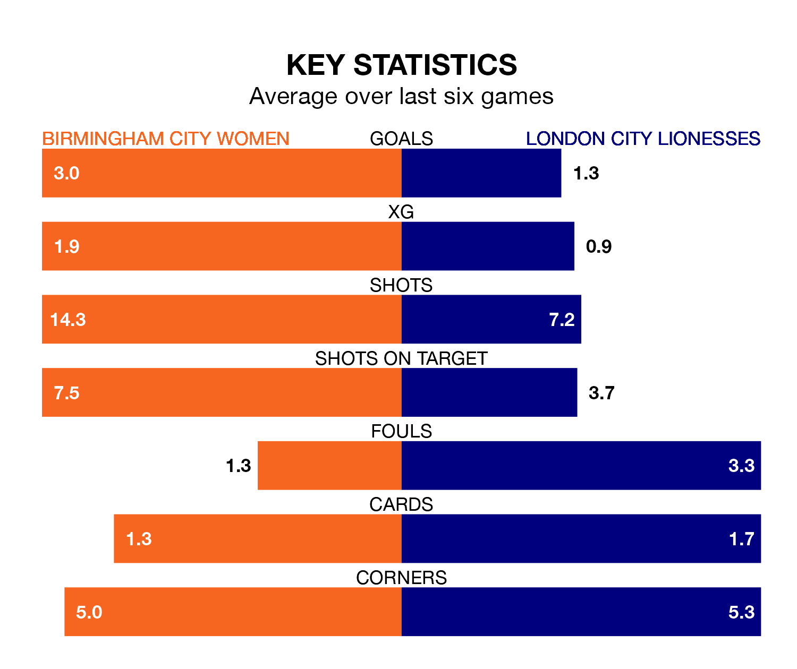

Birmingham City Women host London City Lionesses at St Andrew's on early Sunday on the back of six consecutive wins in the FA Women's Championship.
It means Birmingham City have picked up the maximum 18 points from their last six games, and they face a Lionesses side who lost their last match, and have collected seven points from the last possible 18.
With 23 goals in 12 games so far this season, Birmingham City are the league's third-highest scorers with 1.9 goals per game. And they are conceding fewer than average, letting in 10 goals at a rate of 0.8 per game.
London City, meanwhile, are below average scorers, with 1.1 goals per game, compared to a league average of 1.4. They have conceded 1.8 goals per game.
With Lucy Thomas between the sticks, the Blues can rely on one of the league's safest pair of hands. She has kept four clean sheets in her 12 appearances this season, and only one other 'keeper – Sunderland Women's Claudia Moan – has been able to prevent the opposition scoring on more occasions in the FA Women's Championship.
In the Lionesses's net, Grace Moloney has three clean sheets in 12 games. She has conceded a goal every 57 minutes, more than twice as often as the 135 minutes between goals for Thomas.
The visitors are ninth in the table after 13 games, of which they have won three and drawn three, earning 12 points.
The home side are four places ahead of London City in fifth, with seven wins and two draws putting them on 23 points.
In the last five years, Birmingham City and London City have played each other on five occasions. Birmingham City won one of them, London City three, and they drew once.
On average, the Blues scored 1.2 goals and the Lionesses 1.6 in those matches.
Their last meeting was on November 12, when Birmingham City won 1-0 away.
Birmingham City's last match was on December 17, a 3-0 win against Sunderland Women, with Brianna Westrup (own goal), Jade Moore and Lily Agg getting the goals for the Blues.
London City lost 2-0 against Crystal Palace Women last time out, on January 21.
Updated: 09:18 (UTC), 23/01/24